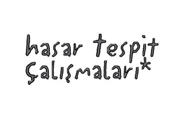

metin üstündağ
15 şubat 1965 yılında erzincan’da doğdu
8 yaşından beri istanbul’da geziyor
yazar - çizer - şair - baba - editör ve iflâh olmaz bir hayal - hayat meneceri
dünya o yürürken biraz aksıyor
* SEL YAYINCILIK